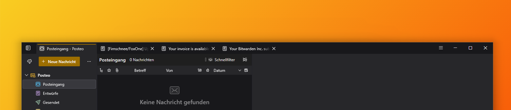

birdone
one line for everything
tabs and unified toolbar in a single row
layout only · no extensions · nothing phoning home

the theme – one line for everything
BirdOne merges the Thunderbird tab bar and unified toolbar into a single row: tabs on the left, toolbar buttons on the right, next to the window controls. The chrome shrinks to one line, and your mail gets the vertical space back.
Below 850px window width the layout falls back to the default two-row interface, so a narrow window stays usable.
The whole theme is one userChrome.css stylesheet – no extension, no background process, nothing phoning home, and every knob is a CSS variable at the top of the file.
BirdOne is being reduced to what it does best: layout, not a colour scheme. The former amber accent and the surface greys are switched off – what remains is a quiet grey for the message list. A companion userContent.css is in the repository but currently not recommended.